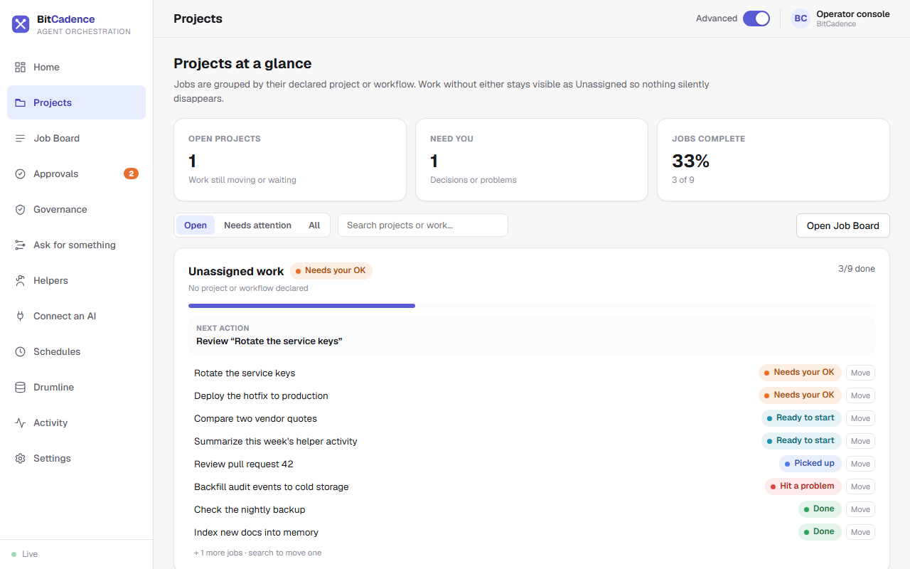

Projects Dashboard
Note: The console sidebar now opens Portfolio (see Portfolio) in place of the Projects page described below. The earlier project grouping view is no longer reachable from the sidebar. The project metadata, assignment and API details on this page still describe how jobs are tagged with a project.
Goal
Group disparate helper tasks into cohesive business projects and initiatives, observe project-level health and completion velocity, and detect blocked or stalled initiatives.
Step-by-Step Instructions
1. Navigate to Projects
In the left menu, click Projects.

2. Inspect Project Groups
Projects at a glance groups jobs by their input_payload.project or workflow (for example gateway-reliability or release-2.4). Work with neither stays visible under Unassigned work, so nothing silently disappears.
- The three cards at the top show Open projects, Need you (decisions or problems) and Jobs complete.
- Use Open, Needs attention and All to choose which projects to list, or search by project or job name.
- Each project card shows:
- A state word: for example Needs your OK.
- A progress bar: how many jobs are done (for example 3/9).
- Next action: the one thing to do next.
- Its jobs, each with a status word and a Move button to put it in another project.
3. Filter Jobs by Project
Click Open Job Board to see every job in the table.
4. Assigning a Job to a Project
When creating a job (via UI or CLI), attach project context inside the job metadata:
- In the New Job form, specify:
{ "project": { "id": "gateway-reliability", "name": "Gateway Reliability" } }
The CLI Equivalent
You can inspect and assign projects from the command line:
# Assign an existing job to a project
curl -X POST http://127.0.0.1:18789/api/jobs/<job-id>/project `
-H "Authorization: Bearer $env:MCO_AGENT_TOKEN" `
-H "Content-Type: application/json" `
-d '{"project": "gateway-reliability"}'
# Fetch project-level aggregate view
curl http://127.0.0.1:18789/api/jobs/project-view `
-H "Authorization: Bearer $env:MCO_AGENT_TOKEN"
What You'll See
- High-Level Rollup: Instead of scrolling through hundreds of granular helper tasks, you see 3–5 top-level project initiatives.
- Coverage Summary: The top header displays total managed project tasks, active count, and whether coverage is truncated (up to 5,000 tasks evaluated server-side).
If It Goes Wrong
1. "Jobs appear in 'Uncategorized' project"
- Cause: Jobs were created without a
projectkey in theirinput_payload. - Fix: Add
"project": "my-project-name"to the job creation payload or workflow YAML definition.
2. "Project marked as Blocked"
- Cause: A prerequisite job in a workflow failed or was rejected, stopping downstream dependent tasks.
- Fix: Click the project card to view the jobs, open the failed job, and either click Retry or Reassign to clear the block.